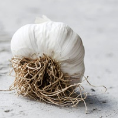

| HEADER | |
|---|---|
| 1. Lettuce - Queen of vegetables. Delicate, soft and delicious but, to quote Gordon Ramsay,“nice and durable” at the same time. Works in salads, burgers, wraps, sandwiches, soups and standalone as well. Advantages: universal vegetable. Disadvantages: none. Rating: 10/10 | |
|  | 2. Garlic – vegetable, medicine and spice in one. Fits everywhere, from stuffed meat to oregano salsa. It’s also used as pesticide and it works! Advantages: why eat different vegetables when there’s garlic? Disadvantages: smell. Oh, the smell. Rating: 9/10 |

|
3. Potato - King of the vegetables. Fits almost everywhere but most delicious is on its own, fresh from the oven. Great taste when at least sprinkled with salt, otherwise it tastes like plaster finish. Advantages: Can withstand high temperatures. Disadvantages: Must be cooked. Needs spices. Rating: 8/10 |

|
4. Tomato – What people in Italy ate before importing tomatoes from South America? Advantages: Smell, taste, look and potential. Disadvantages: A bit leaky. Rating: 8/10 |
| 5. Cabbage – did you know you can eat it raw? You can also cook it. Looks like lettuce, only tougher. Advantages: Cabbage. Disadvantages: Fermenting it takes long. Rating: 7.5/10 | |
| 6. Cucumber – a Russian lottery among vegetables. From a good source – tastes like heaven. From tesco – tastes like water with weird texture. Advantages: Taste. Can pretend it’s a watermelon if sprinkled with sugar. Disadvantages: Takes a bit of time to know your cucumber. Rating: 7/10 | |

|
7. Sausage – It's not even a vegetable. What is it doing here? Advantages: protein, I guess? Disadvantages: Made of dead bodies. This could be improved. Rating: 6/10 |
Deutscher Inhalt